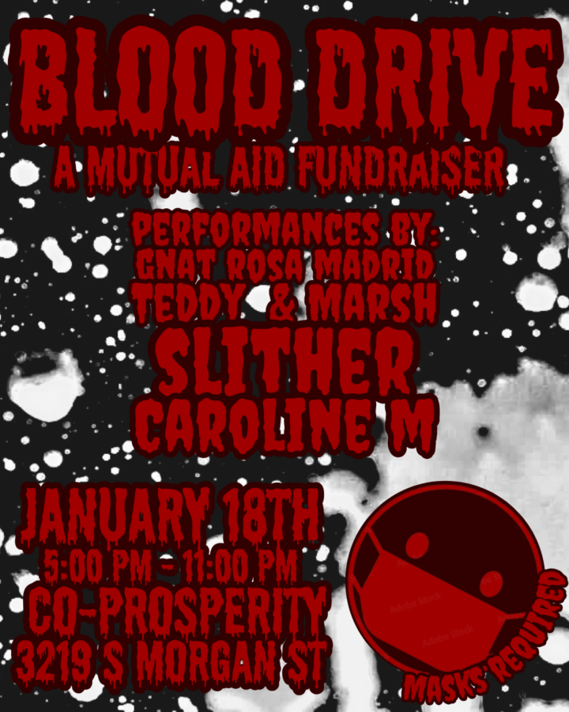

Blood Drive
Blood Drive is a mutual aid fundraiser featuring kink performances by Gnat Rosa Madrid, Teddy & Marsh, Slither, Caroline M. There will be Vending by Flesh Coven, Holy Golem, Spank Bank Enterprises, and Solarisss. All funds raised go to https://www.gofundme.com/f/help-keep-family-together-urgent.